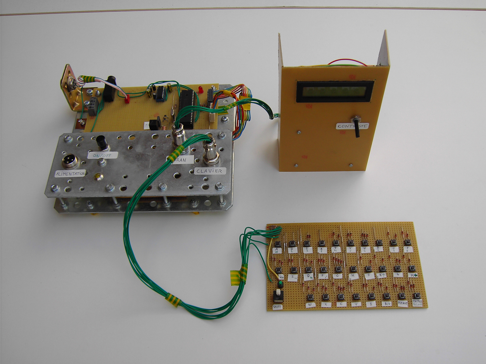

Fabrication d'un mini ordinateur
Ce projet, nommé A6, est né du fait que je voulais programmer un hardware différent de celui du Personal Computer créé par IBM.
J'ai donc décidé de bricoler une architecture "perso" que je puisse ensuite programmer et faire évoluer comme bon me semble.
Comme vous le montreront les spécifications, appeler cette machine "ordinateur" est un bien grand mot, car sa puissance de calcul et sa capacité mémoire sont dignes d'une calculatrice de poche...
Voici une image représentant le clavier et l'écran alphanumérique reliés à l'unité centrale. (Cliquez pour agrandir les images).

{kind=link}
Spécifications techniques
- CPU : Microchip PIC 16F877 cadencé à 4MHz (1 MIPS)
- RAM : 368 octets (oui, octets...)
- FLASH (mémoire programme) : 8192 instructions
- Fonctions périphériques :
- 1 x Universal Asynchronous Receiver Transmitter (UART) norme RS-232, plus connu sous le nom de "Port série", permettant de relier le A6 à un PC ou un autre périphérique,
- 1 x Serial Peripheral Interface (SPI), destiné à communiquer avec le contrôleur de l'écran alphanumérique,
- 2 x convertisseurs analogique-numérique 10 bits,
- 1 x sortie PWM pouvant fournir 400mA@5V
La première image représente l'unité centrale vue de dessus. La seconde laisse voir l'alimentation qui se trouve sous le panneau.
{kind=link}
{kind=link}
Périphériques
Ecran alphanumérique : cet écran de 2 lignes X 16 caractères est capable d'afficher les 127 premiers caractères du code ASCII (il a fallu bricoler pour afficher les autres, comme les accents par exemple...).
Voici une photo de l'écran vu de face et une autre montrant les circuits du contrôleur et du module d'affichage :
La pile 9V scotchée au bas du boîtier sert de contre-poids pour stabiliser l'écran lorsqu'il est debout.

{kind=link}
Clavier : le clavier est muni de 28 touches disposées plus ou moins selon l'ordre AZERTY ainsi que d'une touche Shift permettant de choisir un second caractère par touche. La LED verte indique l'état de la touche Shift.
Retour au menu des projets{kind=link}